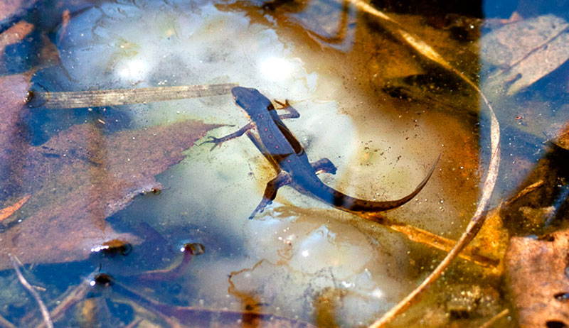

Salamanders are a type of amphibian and they have moist skin
and usually found in damp habitats near or in water.
Salamanders are related to frogs despite how different
frogs and salamanders look.
Most salamanders live in wet or damp places because they need to be moist.
Some other places that they may live in include:
-Under rocks
-In ponds